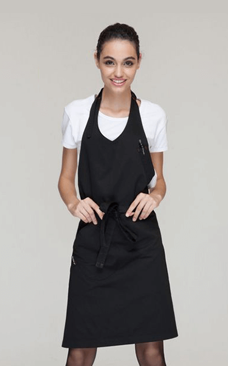
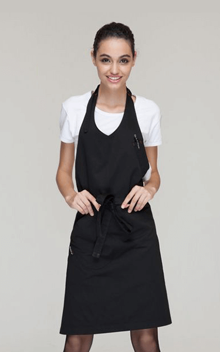

贾斯汀出生于1994年3月1日的加拿大安大略省伦敦的圣若瑟医院，并在安大略省的斯特拉特 福成长。小贾的母亲怀孕时年仅17岁，而他的父母结婚10个月后就离婚， 因此他从小由自己的母 亲、外公和外婆养大。
贾斯汀从小对曲棍球、足球和国际象棋感兴趣， 并一直追求自己的音乐梦想。 他从小自学了 钢琴、鼓、吉他和小号。从五岁起他就无师自通，自学了钢琴、打鼓、 吉他和小号， 华横溢的比 伯还非常热爱唱歌，他的歌声清脆而优美。早在2007年贾斯汀12岁时，在斯特拉特福德当地的歌 唱比赛中演唱尼欧的歌曲《So Sick》并获得了比赛的第二名
查理出生于1994年3月1日的加拿大安大略省伦敦的圣若瑟医院 ， 并在安大略省的斯特拉特 福成长。小查的母亲怀孕时年仅17岁，而他的父母结婚10个月后就离婚， 因此他从小由自己的母 亲、外公和外婆养大。
查理从小对曲棍球、足球和国际象棋感兴趣， 并一直追求自己的音乐梦想。 他从小自学了 钢琴、鼓、吉他和小号。从五岁起他就无师自通，自学了钢琴、打鼓、 吉他和小号， 华横溢的比 伯还非常热爱唱歌，他的歌声清脆而优美。早在2007年贾斯汀12岁时，在斯特拉特福德当地的歌 唱比赛中演唱尼欧的歌曲《So Sick》并获得了比赛的第二名
艾薇儿出生于1994年3月1日的加拿大安大略省伦敦的圣若瑟医院，并在安大略省的斯特拉特 福成长。小艾的母亲怀孕时年仅17岁，而他的父母结婚10个月后就离婚， 因此他从小由自己的母 亲、外公和外婆养大。
艾薇儿从小对曲棍球、足球和国际象棋感兴趣， 并一直追求自己的音乐梦想。 他从小自学了 钢琴、鼓、吉他和小号。从五岁起他就无师自通，自学了钢琴、打鼓、 吉他和小号， 华横溢的比 伯还非常热爱唱歌，他的歌声清脆而优美。早在2007年贾斯汀12岁时，在斯特拉特福德当地的歌 唱比赛中演唱尼欧的歌曲《So Sick》并获得了比赛的第二名。
泰勒出生于1994年3月1日的加拿大安大略省伦敦的圣若瑟医院，并在安大略省的斯特拉特 福成长。小艾的母亲怀孕时年仅17岁，而他的父母结婚10个月后就离婚， 因此他从小由自己的母 亲、外公和外婆养大。
泰勒从小对曲棍球、足球和国际象棋感兴趣， 并一直追求自己的音乐梦想。 他从小自学了 钢琴、鼓、吉他和小号。从五岁起他就无师自通，自学了钢琴、打鼓、 吉他和小号， 华横溢的比 伯还非常热爱唱歌，他的歌声清脆而优美。早在2007年贾斯汀12岁时，在斯特拉特福德当地的歌 唱比赛中演唱尼欧的歌曲《So Sick》并获得了比赛的第二名。
贾斯丁.比伯
DUZU公司总裁
查理. 普斯
Charlie Puth
艾薇儿.拉维尼
Avril Lavigne
泰勒·斯威夫特
Taylor Swift